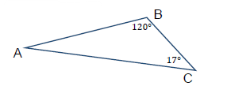
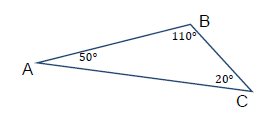
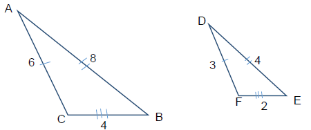
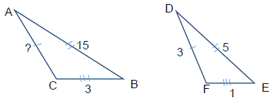
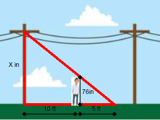
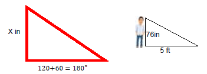
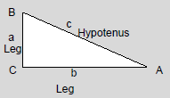
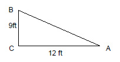

Chapter 5: Geometry
Section 5.3: Triangles
Learning Objective(s)
- Understand properties of triangles.
- Classify triangles.
- Pythagorean Theorem.
- Solve problems involving triangles.
Triangles
A triangle is a geometric figure that has three sides. A triangle is classified as a closed geometric figure because you can start with your pen on one point or side and draw the entire shape without lifting your pen.
The sum of the three interior angles of any triangle is 180°.
Example 1
Using the figure below, find the missing angle.

Solution
Since the interior angles of a triangle sum to 180°:
\[\alpha + \angle B + \beta = 180°\]Subtract \(\alpha\) and \(\beta\) from both sides to isolate \(\angle B\):
\[\angle B = 180° - \alpha - \beta\]Self Check A
Using the figure below, if \(\alpha = 47°\) and \(\beta = 63°\), what is the measure of \(\angle B\)?
\(\angle B = 70°\)
Classifying Triangles
Triangles come in many different sizes with different characteristics. A triangle can be classified by its angles and/or by its sides, as shown in the figure below.
![A classification chart showing six types of triangles. By angles: an Acute Triangle where all angles are less than 90 degrees, a Right Triangle where one angle equals exactly 90 degrees, and an Obtuse Triangle where one angle is greater than 90 degrees. By sides: an Isosceles Triangle where two sides have equal length and the angles opposite those sides are equal, an Equilateral Triangle where all three sides are equal and each angle equals 60 degrees, and a Scalene Triangle where no two sides are equal in length.](images/mth111_5_3_2.png)
Triangles and Their Characteristics — Classification by Angles and by Sides
Example 2
Classify the triangle below by angles and by sides.

Solution
Since one angle is greater than 90°, this is an obtuse triangle. Since every angle has a different measure, each side will also have a different measure, making this a scalene triangle.
Classification: Obtuse and Scalene.
Note
Scalene triangles will always be obtuse.
Similar Triangles
Two triangles are said to be similar if they have the same angles but different side lengths. In similar triangles, the sides that match from one triangle to the other are called corresponding sides, and the angles that match are called corresponding angles.
In the figure below, \(\triangle ABC\) and \(\triangle DEF\) are similar triangles.

The two triangles have the same shape — one is simply smaller than the other. Side \(AC\) corresponds to side \(DF\), and side \(AB\) corresponds to side \(DE\). When two triangles are similar we write \(\triangle ABC \sim \triangle DEF\).
When two triangles are similar, their matching sides are proportional to each other. We can verify this by setting up ratios of each pair of corresponding sides:
\[\frac{AC}{DF} = \frac{4}{2} = 2 \qquad \frac{AB}{DE} = \frac{8}{4} = 2 \qquad \frac{BC}{EF} = \frac{6}{3} = 2\]Notice all the ratios are equal. This is always true for similar triangles and allows us to solve for unknown side lengths using proportional reasoning.
Example 3
If \(\triangle ABC \sim \triangle DEF\), find the missing side \(x\).

Solution
The side we are looking for is \(\overline{AC}\), which corresponds to side \(\overline{DF}\). Set up a proportion using those two sides and one other pair of corresponding sides:
\[\frac{\overline{AC}}{\overline{DF}} = \frac{\overline{AB}}{\overline{DE}} \quad \Rightarrow \quad \frac{x}{3} = \frac{15}{5}\]Cross multiply and solve:
\[5x = 15(3)\] \[5x = 45\] \[x = 9\]The missing side is \(x = 9\).
We can determine if two triangles are similar by comparing two of their angles. If two angles of one triangle equal two angles of another, then the third angles must also be equal (since all three sum to 180°), making the triangles similar. This principle is very useful for solving real-world problems.
Example 4
A man who is 76 inches tall is standing 10 feet from the base of a telephone pole. The man casts a 5-foot shadow, which is the same length as the shadow cast by the telephone pole. How tall is the pole?

Solution
First, convert all measurements to the same unit — inches. Since 76 inches is already in inches, convert the feet:
\[10 \text{ ft} \times 12 = 120 \text{ inches} \qquad 5 \text{ ft} \times 12 = 60 \text{ inches}\]Both the pole and the man create right triangles and share an angle in common, so the two triangles are similar.

Set up a proportion using corresponding sides:
\[\frac{x}{76} = \frac{180}{60}\]Cross multiply and solve:
\[60x = 76 \times 180\] \[60x = 13{,}680\] \[x = \frac{13{,}680}{60} = 228 \text{ inches}\]To convert back to feet: \(228 \div 12 = 19 \text{ feet}\).
The telephone pole is 228 inches (19 feet) tall.
Pythagorean Theorem
When working with right triangles only, we can use a theorem named after the ancient Greek mathematician Pythagoras. The Pythagorean Theorem allows you to find the missing side of a right triangle when you are given the other two sides.
Pythagorean Theorem
The sum of the squares of the lengths of the legs of a right triangle equals the square of the length of the hypotenuse. If the legs have lengths \(a\) and \(b\) and the hypotenuse has length \(c\), then:
\[a^2 + b^2 = c^2\]
Example 5
Find the length of side \(c\) in the triangle below.

Solution
Apply the Pythagorean Theorem with \(a = 9\) ft and \(b = 12\) ft:
\[a^2 + b^2 = c^2\] \[9^2 + 12^2 = c^2\] \[81 + 144 = c^2\] \[225 = c^2\] \[c = \sqrt{225} = 15 \text{ ft}\]The length of side \(c\) is 15 feet.
Example 6
A contractor is building a handicap ramp for a homeowner. Construction laws state that for every 1 inch of vertical distance, there must be a horizontal run of 12 inches to ensure the ramp is not too steep. If the ramp has a horizontal distance of 120 inches and a vertical distance of 24 inches, how long is the ramp and does it meet the standard?
Solution
Step 1: Find the length of the ramp (hypotenuse).
The horizontal distance is \(a = 120\) inches and the vertical distance is \(b = 24\) inches.
\[a^2 + b^2 = c^2\] \[120^2 + 24^2 = c^2\] \[14{,}400 + 576 = c^2\] \[14{,}976 = c^2\] \[c = \sqrt{14{,}976} \approx 122.4 \text{ inches}\]Step 2: Check whether the ramp meets regulations.
The regulation requires a slope no greater than \(\dfrac{1}{12}\). Find the actual slope:
\[\text{slope} = \frac{\text{vertical}}{\text{horizontal}} = \frac{24}{120} = \frac{1}{5}\]Compare: \(\dfrac{1}{5} > \dfrac{1}{12}\).
The ramp is approximately 122.4 inches long, but the slope of \(\dfrac{1}{5}\) exceeds the maximum allowed slope of \(\dfrac{1}{12}\). This ramp is too steep and does not meet the standard.
Summary
A triangle is a closed three-sided figure whose interior angles always sum to 180°. Triangles can be classified by their angles (acute, right, or obtuse) and by their sides (isosceles, equilateral, or scalene). Two triangles are similar if they have the same angles; their corresponding sides are proportional, allowing us to solve for unknown lengths. For right triangles specifically, the Pythagorean Theorem states that \(a^2 + b^2 = c^2\), where \(c\) is the hypotenuse.